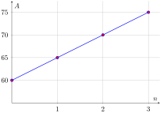
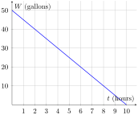
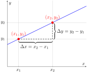
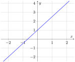
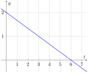
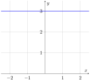
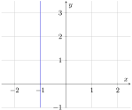

Objectives
After completing this section, you should be able to do the following.
-
First objective.
-
Second objective.
-
Third objective.
| If Maya works … | Maya’s savings will be … |
|---|---|
| 0 hours | \(5(0)+60=\$60\) |
| 1 hour | \(5(1)+60=\$65\) |
| 2 hours | \(5(2)+60=\$70\) |
| 3 hours | \(5(3)+60=\$75\) |
| \(\vdots\) | \(\vdots\) |






